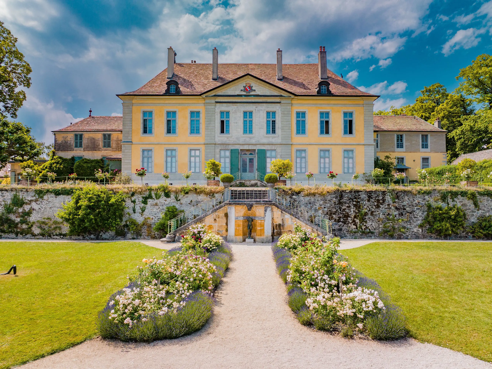

L’Iris est un genre de plantes vivaces à rhizomes ou à bulbes de la famille des Iridacées.
Wiki

Château de Vullierens
Notre collection possède également les iris de Sibérie (Iris sibirica) aux tiges florales élancées portant des fleurs simples, mais très gracieuses.